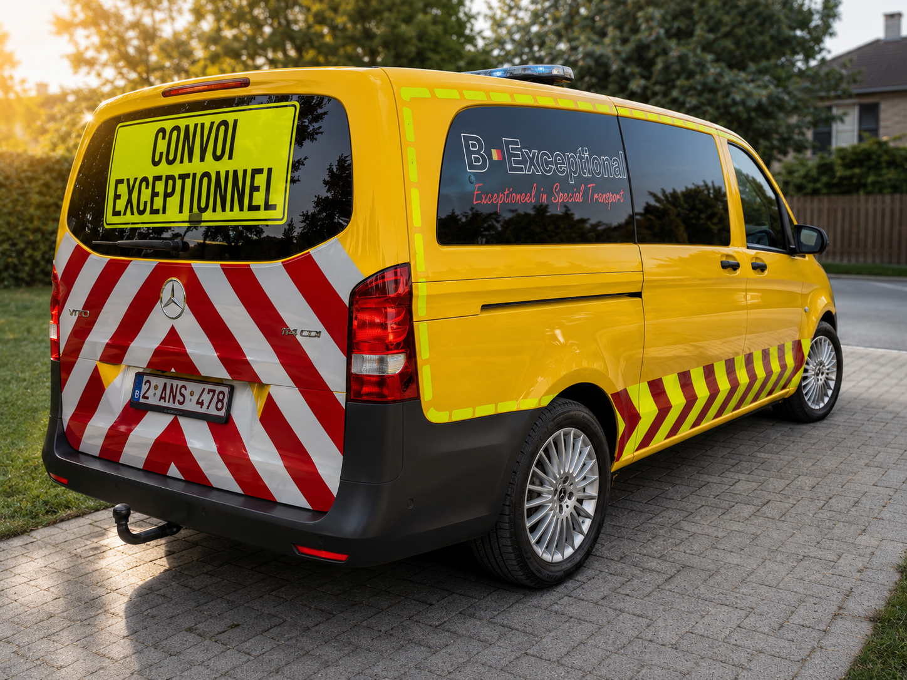

B-Exceptional legt zich sterk toe op het grensoverschrijdend aanbieden van haar diensten.
Op het gebied van transportbegeleiding kunt u bij ons terecht voor de begeleiding van uitzonderlijke transporten in heel Europa.
Elk Europees land hanteert zijn eigen regels en procedures omtrent transportbegeleiding. Dankzij de nauwe samenwerking met onze zusterbedrijven in Nederland en Duitsland kunnen wij efficiënt en professioneel ondersteunen bij grensoverschrijdende transporten. In bepaalde gevallen kunnen onze medewerkers ook begeleiden in andere landen, zoals Frankrijk, Denemarken of Zwitserland.
Of transportbegeleiding verplicht is, hangt in veel landen af van de afmetingen van het transport. Duitsland vormt hierop een uitzondering: daar wordt in de ontheffing bepaald of begeleiding nodig is, en dit verschilt per deelstaat. Duitsland werkt met BF2-, BF3- en BF4-begeleidingsvoertuigen. Ons zusterbedrijf beschikt over alle drie deze types en kan bovendien HiPo (Hilfepolizei) en politiebegeleiding organiseren. Ook enkele Nederlandstalige begeleiders zijn geschoold om in Duitsland te mogen begeleiden als BF2 of BF3.
